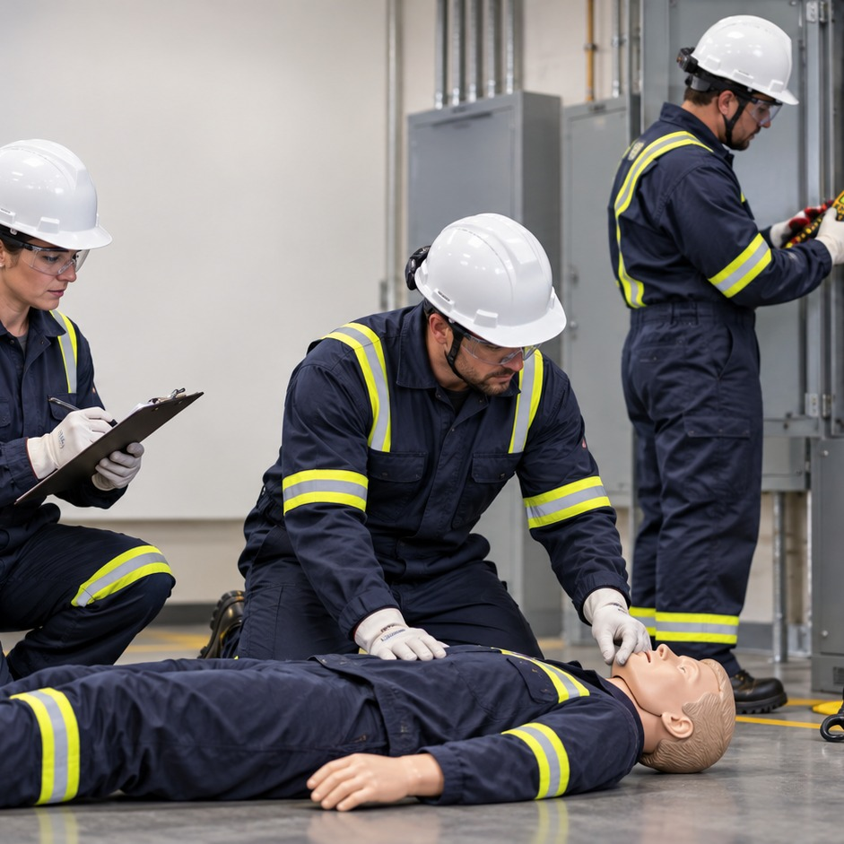

Abertura do treinamento
- Primeiros Socorros para Ambiente de Trabalho
- Objetivo: reconhecer emergências, agir com segurança e acionar ajuda especializada.
- O treinamento prepara para condutas iniciais até chegada de SAMU 192/Bombeiros 193.
- Avaliação ao final: 20 questões, mínimo de 70% e até 3 tentativas.
Imagem do treinamento
